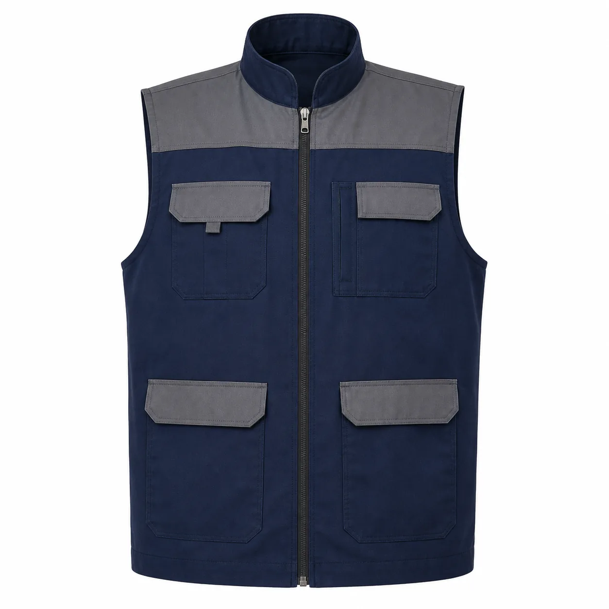
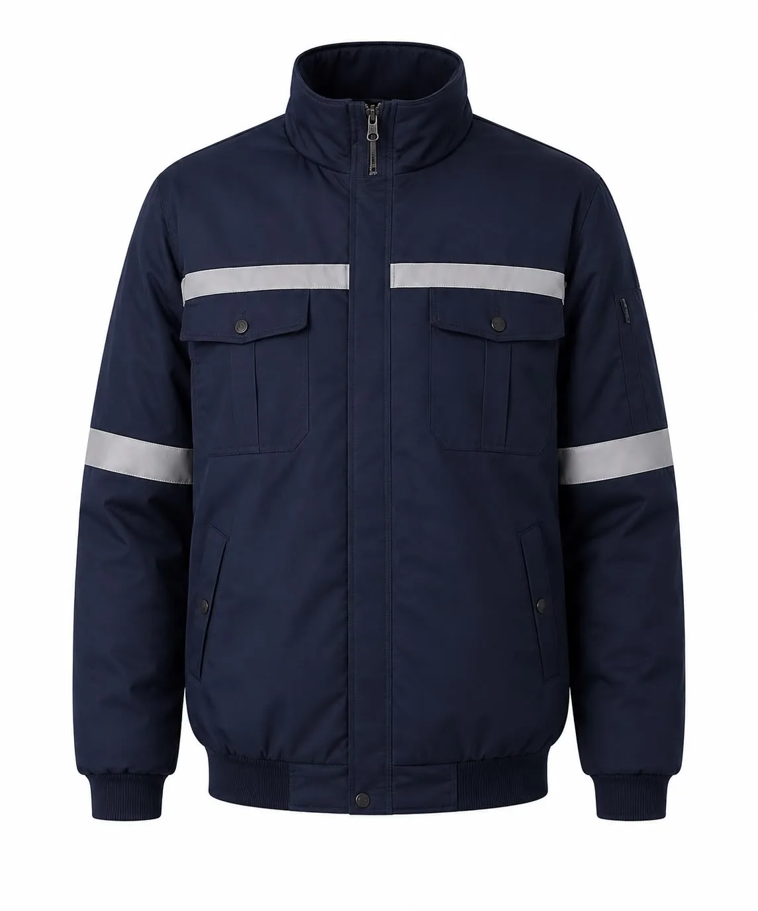
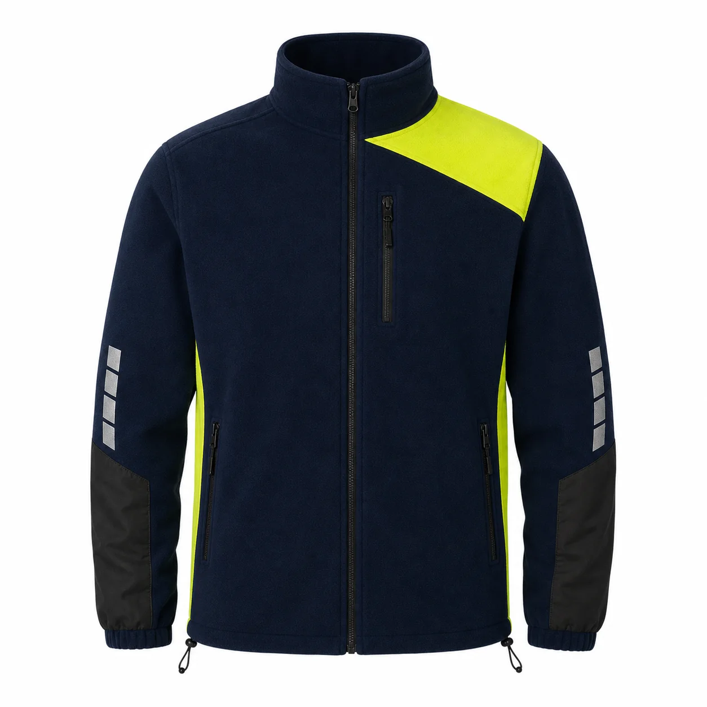

İç ortam
Nefes alabilir polo, sweatshirt ve hareket rahatlığı sağlayan pantolon kumaşları değerlendirilir.
Depo içi hareketten açık saha ve gece vardiyasına kadar farklı lojistik görevleri için kurumsal renklerde, firma logolu personel kıyafetleri üretiyoruz. Minimum özel üretim siparişi 50 adet; hizmet alanı Türkiye genelidir.
Toplama-paketleme personelinde hareket rahatlığı ve iç ortam konforu, yükleme sahasında hava koşulları, sürücü ve kurye ekiplerinde gün boyu kullanım, araç trafiğinin bulunduğu alanlarda ise görünürlük öne çıkar. Ürün seti; görev, vardiya, sıcaklık, yağış, cep ihtiyacı ve kurumun bakım düzeni birlikte değerlendirilerek oluşturulur.
Reflektif parça eklenmesi tek başına standartlı yüksek görünürlük kıyafeti anlamına gelmez. İşverenin risk değerlendirmesi belirli bir koruma sınıfı gerektiriyorsa malzeme, tasarım ve bitmiş ürün uygunluğu ayrıca doğrulanır.

Depo ve sevkiyat görevlerinde hafif katman ve erişilebilir cep düzeni.
Ürünü inceleyin →
Soğuk hava, yükleme sahası ve gece vardiyası için dış katman.
Ürünü inceleyin →
Serin depo ve mevsim geçişlerinde kurumsal ara katman.
Ürünü inceleyin →Nefes alabilir polo, sweatshirt ve hareket rahatlığı sağlayan pantolon kumaşları değerlendirilir.
Rüzgâr, hafif yağış ve soğuğa göre polar, softshell, dolgulu yelek veya mont katmanları planlanır.
Renk blokları ve reflektif alanlar araç, ekipman ve diğer KKD tarafından kapanmayacak şekilde numunede kontrol edilir.
Logo, kumaşa uygun yöntemle uygulanır; ürünler beden, kişi, vardiya, şube veya teslimat noktasına göre ayrılabilir.
Görevler, lokasyonlar, çalışan adetleri, bedenler, mevsim ve hedef tarih alınır.
Model, kumaş, renk, cep, reflektif detay ve logo uygulaması netleştirilir.
Kapsama göre kalıp, hareket, katman uyumu ve görünürlük gerçek numunede değerlendirilir.
Onaylı modele göre üretim ve kalite kontrol yapılır; sevkiyat planına göre paketlenir.
Özel üretimde minimum sipariş 50 adettir; ürün seti ve beden dağılımı proje kapsamında değerlendirilir.
Görev ve risk analizi doğrultusunda eklenebilir. Yüksek görünürlük standardı gereken işlerde bitmiş ürün uygunluğu ayrıca doğrulanmalıdır.
Sipariş kapsamına göre ürünler kişi, beden, departman veya teslimat noktası bazında paketlenebilir.
Görev, lokasyon, adet, beden, logo ve teslimat planınızı paylaşın.